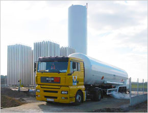

Оборудование заводов по утилизации попутного нефтяного газа
Компания «Прометеус Групп» предлагает комплектную поставку оборудования для сжижения попутного нефтяного газа, а также, по желанию заказчика, может взять на себя в полном объеме функции ген. подрядчика для производства строительно-монтажных работ со сдачей объекта «под ключ».
Поставляемое оборудование эффективно работает на объемах попутного нефтяного газа от 30 млн. м³ до 1 млрд. м³ и выше.
«Прометеус Групп» систематически проводит изучение новинок и инноваций международного рынка разработчиков и изготовителей соответствующего оборудования, передовых технологий и процессов.
Мы выполняем дизайн — проекты, проводим работы и исследования по созданию оптимальных, эффективных и высоконадежных схем заводов по утилизации ПНГ, простых в работе и обслуживании, подбираем производителей и поставщиков оборудования, входящего в состав завода. Выбор компаний определяется качеством продукции, опытом в изготовлении такого рода оборудования, наличием собственного производства и ценой предложения.
Наши услуги
- Разработка технической и проектной документации для изготовления и пуска;
- Поставка комплектного технологического оборудования, включающего механическое, процессинговое, электротехническое и контрольное оборудование на условиях СИФ или площадке заказчика.
- Осуществление технического содействия и контроля качества в проведении строительно-монтажных и пусконаладочных работ, тренинг специалистов заказчика.
Основное оборудование
Установка предназначена для сжижения попутного нефтяного газа и выделения из него пропанобутановой фракции, отбензиненного конденсата и метана.
Принципиальная схема сжижения газа.
Составляющие завода
- блок очистки от углекислого газа и воды (при наличии ртути — также необходимо ее обязательное удаление);
- блок отбора тяжелых жидких фракций;
- блок сжижения газа;
- арматура и соединительные трубопроводы;
- система автоматического управления;
- блок операторской;
- резервуарный парк для хранения сжиженных продуктов;
- терминал для отгрузки продукции;
- системы пожарной сигнализации;
- системы пожаротушения;
- факельные хозяйства.
Технологический процесс — Очистка
Оборудование, используемое для установки завода, и технологические процессы могут изменяться в зависимости от состава газа.
Предлагаемая нами схема, предусматривает очистку ПНГ от углекислого газа, его осушку, снижение температуры потока газа до необходимой температуры конденсации тяжелых углеводородов (ШФЛУ), разделение жидкой фазы (ШФЛУ) на сжиженную пропанобутановую фракцию, бензиновую фракцию, выделение сухого газа (метан, этан) с последующим его сжижением.
Газ с сепаратора второй ступени поступает на фильтр-сепаратор для очистки от твердых частиц, и далее его, с помощью циркуляционного компрессора, где давление газа нагнетается, примерно, до 20 атм., направляют в блок аминоочистки, где поглотителем углекислого газа является аминораствор. После насыщения аминораствор подается на регенерацию, где СО² выделяется из раствора, а раствор поступает обратно в блок аминоочистки.
Очищенный от СО² газ поступает на установку гидроосушки, представляющую 2 колонны с молекулярными ситами. При этом в процессе работы одна из колонн работает на осушку, другая — регенерирует. По окончанию регенерации колонна начинает работать на осушку, а другая регенерирует. Газ для регенерации отбирается из основного потока очищенного газа, который подогревается в трубчатой электропечи. Отработанный регенерированный газ поступает на вход системы очистки.
Технологический процесс — Сжижение
В качестве хладагента в теплообменнике используется смесь азота и углеводородов. Для охлаждения газа используется интегрированный с редуктором центробежный турбокомпрессор, имеющий четыре ступени сжатия, При достижении температуры, примерно -40°С, в «Сold Box» происходит конденсация тяжелых углеводородов, неконденсирующиеся газы (этан-метан) продолжают циркулировать в системе теплообменник — компрессор до достижения температуры сжижения метана.
Сжиженные тяжелые углеводороды поступают в фракционную колонну. В верхней части колонны производится отбор пропан — бутана, а из нижней части колонны отбирается бензиновый конденсат, который поступает на колонну стабилизации и далее в хранилище.
Пропан-бутан с верхней части колонны подается в ёмкости для хранения пропан-бутана. Часть неконденсируемого газа (метана) подается на газотурбинную электростанцию для выработки электроэнергии. Сжиженный метан с помощью насоса подается в криогенные ёмкости для хранения и последующей транспортировки заказчикам.
Малогабаритный завод в Саратовской области
Нижеприведенные данные были взяты из расчетов «Прометеус Групп» для поставки и установки малогабаритного завода производительностью 50 млн. кубометров в год в Саратовской области
| Наименование продукта | Выход в тонн/день при переработке 50 млн. куб. метров газа в год (ориентировочно). Общий объем сжиженных газов составит примерно 97* тонн (расчет проводился на основании материального баланса при сжижении). |
|---|---|
| Стабильный конденсат | 13,4 |
| Пропан–бутан | 17,5 |
| Этан–Метан | 67 |
* — В расчетах заложен расход очищенного газа на выработку электроэнергии.
Установка
После монтажа оборудования Заказчик совместно с представителем компании должны провести 24 часовое тестирование. Объем и качество получаемых продуктов должны соответствовать техническому заданию на оборудование. При получении положительных результатов обе стороны подписывают протокол о соответствии оборудования техническому заданию.
Изготовитель оборудования даёт гарантию на работу завода сроком на 1,5 года со дня пуска, но не более 21 месяца со дня поступления оборудования на площадку.
Предлагаемое оборудование соответствует всем экологическим нормам, действующим в США и Канаде, а также в России. Технологические выбросы в атмосферу или почву практически сведены к нулю.
Срок поставки оборудования может колебаться от 12 до 16 месяцев и зависит от загрузки завода по изготовлению теплообменника, на момент подписания контракта.
Срок доставки оборудования на площадку от 5 до 8 недель.
Срок монтажа при полной готовности площадки под монтаж от 2 до 4 недель.
Экология
В экологическом отношении природный газ является самым чистым видом минерального топлива. При сгорании его образуется значительно меньшее количество вредных веществ по сравнению с другими видами топлива.
Цена определяется исходя из стоимости получаемых энергий на конечном потреблении из единицы измерения энергоносителя. С августа 2004 года по август 2007 года было рекомендовано и поддерживалось регуляторами соотношение $0,10 за киловаттчас (средняя стоимость нефти $68 за баррель). С августа 2007 года была произведена ревальвация соотношения до $0,15 за киловаттчас (средняя стоимость нефти $102 за баррель). Финансово-экономический кризис внёс свои коррективы, но указанное соотношение будет восстановлено регуляторами. Отсутствие управляемости на рынке газа задерживает установление адекватного ценобразования. Средняя стоимость газа при указанном соотношении $648 за 1000 н. метров кубических.
Применение
Природный газ широко применяется в качестве горючего в жилых частных и многоквартирных домах для отопления, подогрева воды и приготовления пищи; как топливо для машин, котельных, ТЭЦ и др. Сейчас он используется в химической промышленности как исходное сырьё для получения различных органических веществ, например пластмасс. В XIX веке природный газ использовался в первых светофорах и для освещения (применялись газовые лампы).